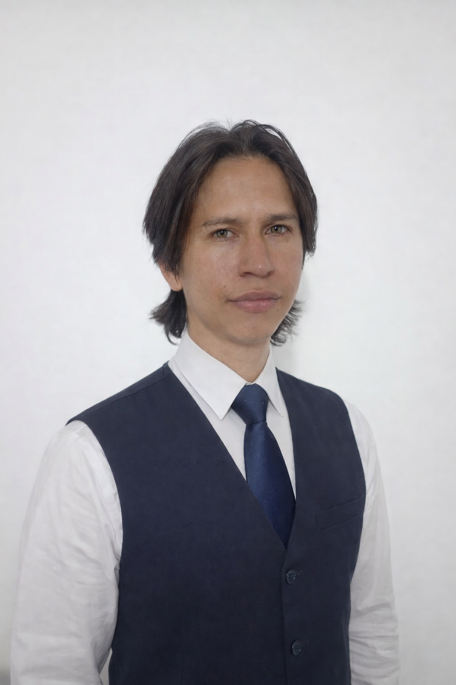

Técnico en Sistemas | Tecnólogo en Análisis y Desarrollo de Sistemas
Fecha de Nacimiento: 17 de Septiembre de 1998
Edad: 27 años (2026)
Estado Civil: Soltero
Cédula: 1.127.653.720 - Cúcuta / Soacha
Dirección: Calle 13 # 36C - 61, Soacha, Cundinamarca
Teléfono: +57 312 651 5313
Email: josuecasadiegos@gmail.com
Jefe / Gerente: Gerson Daniel Mateus | Tel: 311 226 8656 / 314 222 1285
Periodo: Septiembre 2017 – Diciembre 2019 | Cúcuta, Norte de Santander
Responsable, honesto y cumplido en labores de soporte e informática.
Contrato de Aprendizaje SENA: Outsourcing de Nómina | Tel: 304 218 6339
Periodo: 23 de Junio 2020 – 22 de Diciembre 2020 | Bogotá D.C.
Duración: 60 horas | Finalizado: 28 Junio 2019
Duración: 40 horas | Finalizado: 24 Enero 2020